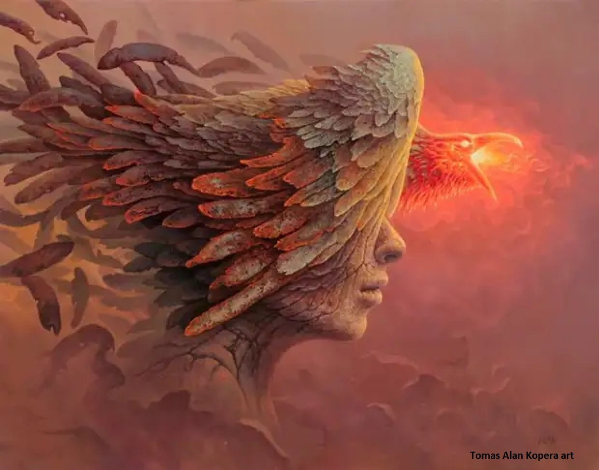

Интернет-форум последователей Учения "левой линии" К. Кастанеды: ccastaneda.ru
Сегодня 00:26
Прошу снять с меня должность модератора форума, мне представляется, я с общением на форумах закончил. Пора приступать к практическим действиям. Благословенный, да поможет ближнему. Верю. Просто верю в то, во что мне нравится верить, не имея никаких ожиданий, никаких "обстоятельств", и никаких непроработанных эмоций. Не потому, что верю кому-то, я кому-то чего-то должен "должен". Боюсь, что он ошибается - я дырявый горшок, мелочный тиран и цепляющийся за свою "личность этого мира" человечишка. У меня нет шансов на спасение даже в аду. К тому же ад - это и есть "этот мир", и "рай" это он же. Мы сами делаем его тем или другим, и когда-нибудь мы все порадуемся этому, воочию наблюдая конкретный результат, говорящий сам за себя. Тогда никому не нужно будет ни во что верить. Но Имена, которые мы нарекаем себе сами, никуда не исчезнут. И тот, кто упрямо и покорно (хорошее сочетание, да?) "вместе со всеми" был согласен называть себя "никем", бесцельно и бессмысленно, поскольку иного он сам не постулировал, начиная движение, "идущим в никуда", "туда же куда идут все" "и где мы все окажемся так или иначе". Вот именно в этом "или иначе" и заключена реальность Дара Орла. Но Путь этот пройдут единицы, которые одновременно обладают твердостью Духа и гибкостью ветра, чтобы переступить через самого себя, и сохранить намерение иметь собственное Имя, отличное от всего окружающего ландшафта, какими бы словами он не описывался кем-либо. Адьес. Кому туда надо, тот меня найдет, понимая, что ни мне ни ему по одиночке этот Путь не осилить. А значит мы объединим наши Силы и намерения и пойдем по нему вместе. Каждый Путем своим, но делая одно дело.
Реальность – это не Мир. Мир – это не Реальность. Восприятие - это процесс «создания» (настройки – КК) этого мира посредством жесткой фиксации во внимании тех аспектов Реальности, которые не смогут быть осознанны человеком, получающим в «создаваемом» Мире опыт чувственного восприятия, ни при каких условиях*1.
Поскольку воля (Сила, осуществляющая «настройку» ака «создание Мира») – есть Сила Мысли, обладающей Осознанным Намерением, проявляя Которое, человек формирует «объективную реальность, внешне независимую и данную ему в ощущениях органов чувств», делая это не «просто», «чтобы было», и не «чтобы жить хорошо» или «не жить плохо», равно как и не «ради» любых других подобных формулировок*2, а имея конкретный «тактический план», и производящий, согласно ему, конкретное прохождение последовательных вех достижения конкретной располагаемой Цели*3, существующего «здесь и сейчас» в «будущем мире», то есть в будущем времени, и поэтому, требующего известную меру осознанных усилий от всех участников для своего «раскрытия» здесь и сейчас во времени и пространстве объективной действительности «этого мира».
Цели, Которая превосходит рамки и границы самой этой Реальности воспринимаемого Мира, поскольку, если бы это было не так – т.е. если бы человек, находясь «здесь и сейчас», внутри имеющегося у него объема чувственной реальности жизненного опыта, должен был бы (мог бы на самом деле) открыть, найти, определить, задать, переназначить, изменить, и т.д., намерение, с которым он сам «существует» и прилагает усилия, получая жизненный опыт «здесь и сейчас», то это бы означало, что он действует впустую и бесцельно, принимая создаваемую им самим иллюзию за действительность – поскольку «корень» таковой (гипотетической) цели и намерения относился бы к его «внутренним сфирот» (НК) / «внутренним эманациям» (КК), пойманным точкой сборкой в пучок, делающий воспринимаемым тот «реальный мир, в котором человек находится здесь и сейчас объективно и внешне независимо», то есть, к тому объему Света Жизни, который находится в его Келим (ощущениях) не «постоянно», а «временно», и который «вошел» в них, преднамеренно опосредуя этим «входом» реальность последующего (последовательного) полного выхода*4, ради придания (изначально имеющейся целевой) требуемой формы, посредством «очищения» (издохехут), производимого входами-выходами Света Жизни из Кли-ощущений*6 человека, имеющегося у него посредством происхождения его «реальной жизни» внутри «Келим реального мира», то есть туннелей времени (эргрегоров, неорганических миров по КК и лабиринтов сновидения), которые прокладывает человек, подобно кроту или землемеру, производя этим эволюцию Мира, который он воспринимает не для того, чтобы «ему в нем жилось комфортнее», и даже не его детям (хотя и все это тоже, но только по факту – опосредования настоящей цели своей работы*7.
А для того, чтобы создаваемый «дом», смогли впоследствии заселить новые, формирующиеся, и проходящие свое становление, обладающие самосознанием и получающие опыт чувственного восприятия существа, новые жизненные волны, эпохи и цивилизации, которым еще только предстоит быть «созданными из ничего» Творцом, Свят Благословен Он, и начать посредством этого свой долгий эволюционный Путь к формированию и раскрытию настоящей Цели и Смысла, Намерения – Замысла, существования их самих, существования мира, [существующего] посредством осознанного «скрытия» [реальности] Того, Кого Некому Называть по Имени.
*1См. также: Шесть объясняющих предположений, К. Кастанеда.
а также: Конфронтология самовоспроисхождения человеческого Духа, Зеир А.А. ↩
*2Любых формулировок осмысленного целеполагания, являющихся целиком «ложью» в том смысле, который вкладывается в данной статье в понятие «преднамеренной цели» ↩
*3Являющейся реальным явлением, «генерирующим энергию», в терминологии Шошопаншоко, или «существующим как сущее из сущего», языком Каббалы, а не как «созданное из ничего», что характеризует категорию реальности «своего собственного бытия» человека этого мира, которого на самом деле просто не существует, и даже «объема реального мира» в котором «он думает, что существует», на самом деле просто не существует – он нафантазирован им самим, преднамеренно осуществляющим это «здесь и сейчас» ради цели, о которой он не просто «не помнит сознательно», и даже не просто не догадывается о существовании таковой в реальности, но и всю свою жизнь пресекает собственные, равно как и окружающих, до которых ему есть дело, дилетантские попытки что-либо об этой цели узнать, или хотя бы просто всерьез интересоваться данной проблематикой, не развешивая автоматически ярлыки «детский лепет», «нелепый бред», «уход от реальности» и т.п., т.е. проявляет агрессивное ослиное упрямство в сохранении себя в этом невежестве, которое, к великому сожалению, и является самым непосредственным проявлением имеющегося у него намерения и осознанной цели, выполнением и соответствием которой занято его «второе кольцо силы», поскольку цель эта поставлена и существует не для того, чтобы болтать о ней и протирать штаны в форумных баттлах за звание снуспуфика и снусмумрика, то есть, простите, трезвого безупречного видящего воина, потерявшего человеческую форму и остановившего внутренний диалог, лишившись личной истории и идеи себя посредством тщательного перепросмотра всех своих бессмысленных эпизодов реальности «нарисованной на стене за камином двери в реальный мир», ради цели, действительность которой реальна в большей степени, чем выполняющей ее субъект, который не имеет даже доступа к ее располагаемой формулировке перед самим собой, но выполняет безукоризненно, поскольку создал целый иллюзорный Реальный Мир, чтобы воздействие на него посредством «органов чувств» им трактовалось в точности таким образом, каким и требуется, чтобы он посредством их последовательного восприятия и реакции, осознания и «перепросмотра посредством намеревания себя в будущее», получая опыт жизни этого мира, одновременно производил ту полезную работу, ради которой он на самом деле и находится в этом объеме реальности именно так, как находится, посредством жесточайшей самоцензуры не имея, в большинстве случаев, даже возможности «вращать головой и оглядываться», кроме как на то, тогда и таким образом, каким он сам это делает в точности намеренно, находясь в том объеме чувственного восприятия этого мира, «опытное получение» которого соответствует и опосредует выполнение располагаемого участка «работы», реально и ощущаемо (правда уже не им, и совсем по другому поводу) приближающей к раскрытию в наблюдаемой «объективной действительности этого мира» того целевого состояния «плантаций» «культивируемого человеком осознания Орла», достижение которого этой самой преднамеренной целью объективно независимо от отсутствующего у человека какого либо «особого мнения» по этому, основному и базовому, по всем понятиям логики и здравого смысла, во всей его жизни, вопросу, является и производится. ↩
*4«Только наполнение Кли Высшим Светом с Его последующим исчезновением (выходом из Кли), делают Кли пригодным к выполнению своего предназначения» (то есть, опосредуют собой реализацию намерения и достижение цели, имеющейся у этого Кли, находящегося в процессе своего создания и формирования живым человеком этого мира, языком настоящей статьи) - Бааль Сулам, (благословится Свет Души выдающегося каббалиста, вечно Живой в «Мире Простого Белого Света»), Введение в Науку Каббала (Птиха), пункт 5 (immdfm) ↩
*5См. также: Воззвание к друзьям-каббалистам, Зеир А.А. ↩
*6Т.е. посредством возникновения, испытывания, прекращения и изменения, чувственного восприятия нами, тех или иных, условно говоря, «измененных состояний сознания», которыми является любое переживаемое в жизни состояние, кроме называемого «рутинной повседневной настройкой» человека, происходящей с ним «здесь и сейчас». В реальности «выход» Света из Кли настолько же важен, насколько и «наполнение», если даже не более важен. Однако, в работах К. Кастанеды, этому аспекту «магической реальности чувственного восприятия эманаций Орла» не уделено никакого осознанно целенаправленного внимания, ВООБЩЕ. Написаны там вещи типа: «я к тому моменту вернулся в обычное состояние сознания, забыв все что знал, и обнаружив привычное самодовольное беспокойство о себе…», то есть, извините за прямоту, чтобы сделать из самого себя форму макания в дерьмо своими последователями друг друга, используя эти формы как «ориентир трезвого безупречного настроения и намерения на Пути Воина». Сам К. Кастанеда, не виноват, в том, что все в Реальности так оказалось устроено, конечно. А ВОТ МЫ, ПОСЛЕДОВАТЕЛИ КК, ДЕЛАЮЩИЕ ЭТО НЕПОТРЕБСТВО НА ФОРУМАХ В РЕАЛЬНОМ ВРЕМЕНИ, И НА ГОЛУБОМ ГЛАЗУ СЧИТАЮЩИЕ, ЧТО «ИМЕННО ТАК И НАДО ЖИТЬ, ИДИ ПО ПУТИ, ДЕЛАЯ ЭТИМ ВКЛАД В ЧЕЛОВЕЧЕСКИЙ ДУХ», ЕЩЕ КАК ВИНОВАТЫ! Этот «вклад», Господа, подобен не деяниям «видящих», а тем «вкладам», которые оставляют на дорожках собаки в местах своего выгула. ↩
*7Являющейся строго «не ради себя» и ступенью «второго внимания», осознание которого первым вниманием блокируется без возможности когда-либо «снять запрет на осознание» продолжая быть «взрослой разумной человеческой личностью, воспринимающей реальный внешний мир органами чувств». Тупо потому, что эта блокировка сама и является самим «слепым намерением» и целью запуска человеком «первого кольца». Только человек, который ее запустил, не является той же самой «разумной сущностью», которой является, условно говоря, ака мыслит себя априорно самостоятельно существующим, человек, который, выполняя эту работу, создает целый выдуманный мир только для того, чтобы ни секунды не сомневаться, что вся, производимая им работа, усилия, намерения, цели, действия, жизнь, опыт и так далее – приобретает он сам, по своему пониманию (или не пониманию, что одно и то же), и ради себя («то есть ни ради чего вообще, что еще за вздор и чушь такая? Просто я живу, как все, работаю как все, и как все, не задаю лишних вопросов, поскольку на это у меня не остается времени, да и желания по большому счету тоже»), либо «абсолютно случайно», либо «не важно как, а важно что приобретается» - то есть то, о чем в общем смысле и ведется разговор в этой статье. То, что не важно для чего, как и с какой целью приобретается/испытывается/переживается, еще в момент своего самого первого «входа», «на подступах» к «сосуду» человека, уже вытекает из его «горшка» в точно известной последовательности и объеме специально для этой цели проделанных в нем «дырок». Смерть обнуляет все, к чему человек стремился и чего ему казалось что «достигал» или имел, добивался или кем или чем являлся в жизни, множит на ноль, и выбрасывает в мусорную корзину раньше, чем человек успевает, удивленно подняв голову в сверкающую высь, сказать «Папа?» Человек «работает» в этом мире точно зная это «видя» это, потому он сам и есть «это», смерти нет больше нигде, кроме как в нем самом, выполняющем работу «в рабстве у фараона», как говорят каббалисты. Потому что он упрямо отказывается слышать, что жизнь без преднамеренной цели – то же самое, что железобетонная гарантия итога «бесславная и бессмысленная смерть, как будто он сам вообще не жил» ↩
П.С. Кстати, если это кому-то интересно, небольшой экскурс в познавательную орнитологию. В названии статьи приведена реальная «видовая масть» Птицы Свободы, о которой говорили ДХ и КК. Она не делает кругов и не возвращается, потому что все, что входит в ее намерения, она делает непосредственно в процессе пролета над соответствующими «Келим реального мира», а завершают работу «на местах», следуя Ее «преднамеренной и до конца осознанной цели», уже, вылупляющиеся посредством этого «полета» то там то тут, птенцы среднестатистической птицы, с несколько отличными от среднестатистической для ее вида внешностью и повадками, кому-то могущими показаться «чудовищными», но на самом деле, всего лишь свидетельствующими о наличии у такового птенца своего собственного, «особо важного мнения», о роли, смысле и предназначении бытия и цели существования вышеупомянутых «Келим», в которых он рождается птенцом кукушки, не подозревая о том, кем и чем ему предначертано стать в «будущем мире», в котором каждая птица будет, даже будучи малым птенцом, «видеть» в точности то, «кто она», «где она», «зачем она», «куда она», и так далее, потому что она в этом будет не одна, не сама по себе, не сама для себя и не вопреки себе, даже если тебе, нет до будущего этого «птенца» никакого особого дела в имеющемся у тебя «гордо-одиноко-свободном, безличностном, безжалостным и нечеловеческом настоящем». Просто будет слишком поздно что-либо менять и «хвататься за голову», когда «вдруг» станет неоспоримо очевидным то обстоятельство, что этот будущий птенец, это Сам такой ты и есть.
П.С.С. И еще раз специально для exorcist (если ты Сам такой, а не exorcist, то можешь не читать :)): да, эта Птица – то же самое что твой Кецалькоатль и есть. А еще это библейский «змей», «соблазнивший» Еву отведать яблоко «этого мира». И следом отправившийся посредством этого «ползать на брюхе по Земле», чтобы культивировать заветные яблочки вместе с ними. Сам себя, что называется, наказал :D, стремясь помочь наивным человеческим детям найти на «Карте неведомого», в каком месте в точности у их единого «светящегося кокона» должна находиться «точка повышенной яркости», в момент осуществления мужчиной и женщиной формообразующего акта самопознания, завершающегося обретением полноты и целостности самих себя. А заодно абсолютной свободы восприятия себя и мира кем и чем угодно, кроме Того, Кем это восприятие осуществляется на самом деле посредством расположения и фиксации точки сборки человека Своим «третьим вниманием» в то место «Келим Реального мира», находиться в котором человеку советует тихий голос Пути Сердца. Если ему каким-то чудом удается «перекричать» маты-перематы внутренней прямоходящей макаки, полученной «в непосредственное наследство» от «Катнута» этого мира, то есть буквально, ВД, который является Кли, формировавшееся и развивавшееся в человеке посредством его превращения из «ползающего под столом покемона» в «человечка этого мира», с последующим крайне показательным по форме происхождения превращением «человечка этого мира» во «взрослую личность этого мира», осуществляемой посредством автоматической «пакетной» замены «ярлычков», наклеенных на все, что по мнению среднестатистического ребенка, имеет отношение к «взрослому миру», с ярлыка «ЗАПРЕЩЕНО», на ярлык «ПРЕСТИЖНО», а значит, показано к применению во всех уместных и не уместных случаях, примерно как позолоченные часы «ролекс» на руке героя Пелевина в Поколении П. В итоге из животной по сути ступени (т.е. предшествующей располагаемой человеком разумным) раннего и не очень детства, человек переносит «как есть» без какого либо анализа целые блоки «атрибутов взрослости», на самом деле являющиеся атрибутами утверждения ребенком своей собственной «не-ребенковости», наклеевыми им на все подряд «вопреки» всему, на что родители клеят ярлык «запрещено», «преждевременно» и «ограниченно», а заодно с ними и «вредно, опасно и бессмысленно», поскольку ребенок не обладает еще Кли посредством жизненного опыта, которое позволило бы ему сформулировать «нафига» в точности ему может потребоваться отличать одно от другого. И вот таким нехитрым образом происходит «передача по линии» «знания» «черных магов», являющихся на самом деле «магами, использующими самих себя в темную», а если воспользоваться принципом бритвы Оккама, то являющиеся теми магами, которые создавали и управляют «Келим реального мира», частью которых человек всю свою жизнь является, сам по себе не являясь никем и ничем, кроме ходячего биоскафандра «тела сновидения этого мира», и которым принадлежит чуть более, чем полностью, на самом деле, то «мыслесуществование», внешне выглядящее особобленным и имеющим самостоятельность, и реальность собственного, уникального и объективного, происхождения процесса внутри этих Келим и по логике этих Келим, с тем объемом «культивируемого объема осознания» который в этих келим реально содержится, потому что люди, производящие последовательную эволюцию эти Келим по своей собственной свободной воле, «сдают» туда «на ответственное хранение» все свое располагаемое «полученное взаймы от Орла» жизнь-осознание, чтобы затем «получать» свой собственный Свет Жизни «общественно поощряемым» способом строго лимитированными порциями, в строго предписанные моменты (не самим человеком, разумеется, человека тут пока нет как явления, он лишь только может впоследствии «родиться» осознанно, умерев как личность этого мира смертью, вполне очевидной и красноречивой для всех, кому вообще до этого может и должно быть до этого дело, но продолжающий жизнь посредством того, что «подменил» адресат трансфера при «возврате долга» Орлу, и вместо того, чтобы отдать свою Жизнь той инстанции, которая ему ее выдала, то есть Келим этого мира, черным магам и их бодрому повседневному зомби-аттракциону, для дальнейшей выдачи таким же анонимным способом таким же анонимным получателям, которым он на самом деле, если бы у них была в приказном перечне «идеи самого себя» такая опция, нафиг не нужен, в том виде, в котором он им «даруется» изначально, поскольку ничего во всей следующей за этим реальности «жизни взрослой сознательной личности» для них лично нет и не предполагается, а принимаемый «дар» на самом деле, для человека этого мира, является проклятием и настоящей «кабалой» (в смысле насильственным рабством), и лучшее, на что они могут оправданно надеяться, что может с ними случиться – это быстрая и легкая смерть, которая положит этому беспросветному аду долгожданный конец. Почему пишу это именно exorcist-у? Не имею понятия, я вообще редко думаю о том, что делаю. Но предполагаю, что это происходит потому, что мне хотелось бы его направить на повторное переосмысление ответа на вопрос о том, в точности ли он с тем, что он «видит» в вышеописанном объеме своей собственной реальности, как и все абсолютно люди планеты, поскольку «видение» - суть ничто иное, как осознание работы собственного «второго кольца Силы», а каждый человек рождается и существует, имея и применяя оба этих кольца, чтобы получать тот жизненный опыт, который с ним происходит посредством этого. И вся разница между нами, кем бы мы не являлись, и не казались друг другу, сводится к тому «маленькому нюансу» - ответу человеком самому себе на вопрос, - НАФИГА человек «видит» то, что он продолжает осуществлять изо дня в день по своей собственной свободной воле, почему он не поднимает задницу со стула и не пытается реально, то есть на самом деле, а не якобы, что-то менять в этом исключительно высокодуховном магическом процессе, - либо отсутствием такового ответа за неимением вопроса. Точнее, за неимением того, кто, пока что, мог бы такой вопрос задать, равно как и того, кому он мог бы быть задан и кем он мог бы быть осознан в полном соответствии с серьезностью своей несгибаемой преднамеренной постановки, потому что «черные маги» себе не задают вопросов вообще, все их вопросы по сути задаются и отвечаются прямоходящему нейро-программируемому биороботу с интеллектом на уровне младших классов начальной школы, который они с упоением называют собой, глядясь по утрам в зеркало.
П.С.С.С. И еще кое что. Птица Свободы не делает кругов. Это значит, что сидя на пятой точке мы ничего не добьемся, кроме потери того, что нам и так не принадлежит и никогда не принадлежало, но что нам даровано в дар шанс иметь шанс увековечить, сделав одним целым со своим собственным Именем, перестав называться «никто, идущий в никуда, вместе со всеми, точно также не имеющими в этом никакой собственной преднамеренной цели», но начать идти куда-то, куда мне и тебе, Сам такой, в точности нужно, потому что я сам так решил, и ты сам так решил, и нам с тобой по барабану до того, что об этом скажут окружающие, вообще нам «по барабану» все больше все «окружающие» в принципе, кроме тех, которые мы, посредством этого выбора, сами выберем, соберем, сформируем и используем как Кли для «подмены адресата при возврате жизненной Силы взятой в долг у Орла» в момент символической смерти, а потом и реальной, когда достигнем цели практическим совместным действием по своей собственной свободной воле, завершив полностью все необходимые этапы создания, развития и формирования вышеупомянутого Кли, во всем подобного тем Келим, которые управляют человеком этого мира описанным выше достаточно подробно способом, но только в которых это «управление» происходит полностью осознанно и преднамеренно человеком, делающим это по своей собственной свободной воле, и этим делая называемую ступень личным достижением осознанной реальности осуществления вклада в человеческий Дух, и в той мере реальности «даруемого Орлом Дара», в котором этот вклад объективно осуществляется, увековечить свое собственное осознание и память себя одновременно и вместе с теми, кто получает этот вклад в будущем мире, чтобы раскрыть и распространить его дальше, поскольку ЖИЗНЬ НЕ ЗНАЧИТ НИЧЕГО ДЛЯ МЕНЯ ОДНОГО, поскольку жизнь в Реальности является действием, процессом, производимым в точности преднамеренно и целенаправленно, а значит не «ради себя» и не «просто без цели», поскольку ЯВЛЕНИЕ Я САМ НЕ СУЩЕСТВУЕТ ВООБЩЕ, оно является продуктом работы первого внимания и существует только умозрительным образом, а «увековечить осознание и память себя» мы намереваемся посредством реальности своего существования в объеме реальности, гораздо более конкретном, имеющим основу гораздо более плотную и объективную, чем рисуемый нами этот мир, даром что в нашем чувственном восприятии эта «истина сознания» первостепенной практической важности, «раскрывается» регулярным образом только в момент, которой одновременно завершает и все то, в связи с чем для нас эта важность выражается, поскольку нам раскрывается, что мир, это иллюзия, что я не существует и никогда не существовало, а реальности «жизни не ради себя» мы так и не успели выстроить в течение жизни осознанно по своей собственной свободной воле, а значит, целевая точка «Пути в никуда» нами успешно достигнута, правда отметить гипотетический «чекпоинт» и порадоваться его прохождению будет уже некому, т.к. «никому идущему в никуда» по достижению точки назначения больше стремиться некуда, а ни к чему не стремиться в точности преднамеренным образом – означает не существовать, поскольку Мир, в Котором отсутствует какое бы то ни было движение, это не мир людей, а человек, сливающийся с Абсолютом, просто возвращается к тому состоянию, которое было и есть у этого Абсолюта как невыразимой вещи в себе, в которой нет места для «совместного» существования «имярека такого-то», обладающего теми же свойствами восприятия реальности «абсолюта», но при этом по какой-то неизвестной причине желающего сохранять осознание и память о себе как об отличном в чем-то от «абсолюта» явлении - «имярек»-е. Таким образом «два одиночества находят друг друга» - человек этого мира, и «пробужденный и просветленный духовный ищущий», «нашедший» свою «дхарму», «садхану» или «абсолютную свободу третьего внимания» в сферах, сущностно отличных по качеству восприятия от этого мира, «являющегося миром страданий, боли и безысходности». Они встречаются там же, откуда и отправлялись – нигде. Потому что некому и не с кем в результате оказалось «встречаться». «Кли, полностью наполненное Высшим Светом, аннулируется перед Ним, и как будто бы не существует. До тих пор, пока наполнение не покинет это Кли, сделав ощущаемо реальным различие свойств между ним и Светом, вместилищем Которого оно служит, и Которым было формируется»… Запомни, Сам такой: «этот повседневный мир» людей не является ничем «сам по себе», но становится он исключительно тем, и посредством того, чем мы сами его делаем, и эта Истина становится все более актуальной и первостепенной, уже не только как банальная «народная мудрость», но и как часть магической Реальности, в которой нам предстоит существовать в самом скором будущем «настоящем», если мы, конечно не выбираем один из двух вышеописанных путей, но твердо намерены обладать собственным Именем, отличным от «ничего» и «никто», и не боимся формулировать Цели своего «магического путешествия» вполне конкретно вслух на человеческом языке, вместо того, чтобы бесцельно и безропотно идти «туда же куда все – в никуда, потому что их туда отправил лично авторитетный товарищ, и не пытаясь понять сказанное хоть сколько нибудь творчески и оригинально, то есть совершенно не так, как все, забирая посредством этого свою волю у неорганика и помещая ее в келим создаваемого круга единомышленников, объединенных твердым намерением достичь единообразно понимаемой общей жизненной цели, в точности преднамеренно осознаваемой ими посредством действия строго вопреки самому себе, привыкшему действовать так, чтобы пятая точка магическим образом все время действия сохраняла непрерывность слияния с духом кресла или дивана». Если нам со «всеми» не по пути (если только им с нами не будет по пути, а это уже совсем другой разговор), то давайте сделаем шаг первыми. Потому что есть обоснованные опасения, что Птица Свободы не делает того, что мы должны сделать сами и своими силами, то есть вопреки и посредством постоянного преодоления себя, поскольку «неделание» является сутью практики «Кругов Жизни», и включено буквально в каждый аспект, связанный с их реальностью, во всем, что касается воина лично в связи с этой реальностью в любой момент здесь и сейчас. Определенный период строгой «конфронтологии» с самим собой, как мне это представляется, неизбежен и нормален, но вместе с этим (не ожидая ничего, но зная об этом) зная, что когда практика набирает минимальный собственный ход, это постоянное преодоление, не то, что «исчезает» - оно никогда не исчезает, потому что тогда бы сам смысл практики потерялся, - но «подслащается» и «покрывается» ощущениями, связанными с нахождением точки сборки в моменты практики, а потом и перманентно, в местах, недоступных для регулярного восприятия «среднему человеку», но становящиеся доступными для практического осуществления того особого набора средств, техник и методов, равно как и конкретных располагаемых целей и намерений, общих и частных, посредством которых Круг создается, формируется, развивается и растет, пока не станет самостоятельной энерго-единицей, имеющей реальность бытия Кли (резервуара) Высшего Света Жизни, Ор хохма (ивр.), который КК называет Светом Сознания или «энергией жизни», Силой Настройки или Внутренним Огнем (разные аспекты одного и того же явления Реального мира). Света Жизни, Которая «не начиналась и не завершается» посредством начала-прекращения сновидения этого «реального мира» человеческой личностью, а значит, позволяет участникам Себя, т.е. участникам Круга, на деле, в виде располагаемой их собственной «объективной реальности», представлять себе реальность Дара Орла «увековечить осознание и память и о себе», а не в мечтах и фантазиях, по описаниям «словами» в чужих книжках о чужом Пути и чужой жизни, реально не имея ни малейшего объективного шанса достичь этого в этой ощущаемой жизни человека этого мира, если снять розовые очки и посмотреть правде в глаза впервые по-настоящему: ТОЛЬКО ВМЕСТЕ МЫ СИЛА ! ЕСЛИ НЕ СЕЙЧАС, ТО НИКОГДА ! ЕСЛИ НЕ ЗДЕСЬ, ТО НИГДЕ ! ЕСЛИ НЕ С ТЕМИ, КОГО ДУХ ПРИВЕЛ В ЭТУ КОНКРЕТНУЮ ТОЧКУ ЗДЕСЬ И СЕЙЧАС, ТО НИКАК И НЕ С КЕМ ! ЕСЛИ НЕ НАЧАВ ДЕЛАТЬ ЭТО СЕЙЧАС, ПУСТЬ И СТРОГО «ВОПРЕКИ» САМОМУ СЕБЕ, НО ПОНИМАЯ, ЧТО ДРУГОГО ВАРИАНТА НЕТ, - ТО ЛУЧШЕ БЫ Я ВООБЩЕ НЕ РОДИЛСЯ И НЕ ПРОШЕЛ ЭТОТ БЕССМЫСЛЕННЫЙ ЖИЗНЕННЫЙ ПУТЬ, ОСТАВАЯСЬ НИКЕМ, ИДУЩИМ В НИКУДА НЕОПРАВДАННО ЗАПУТАННОЙ И ВИТИЕВАТОЙ ДОРОГОЙ. СДЕЛАЕМ И УСЛЫШИМ!!!